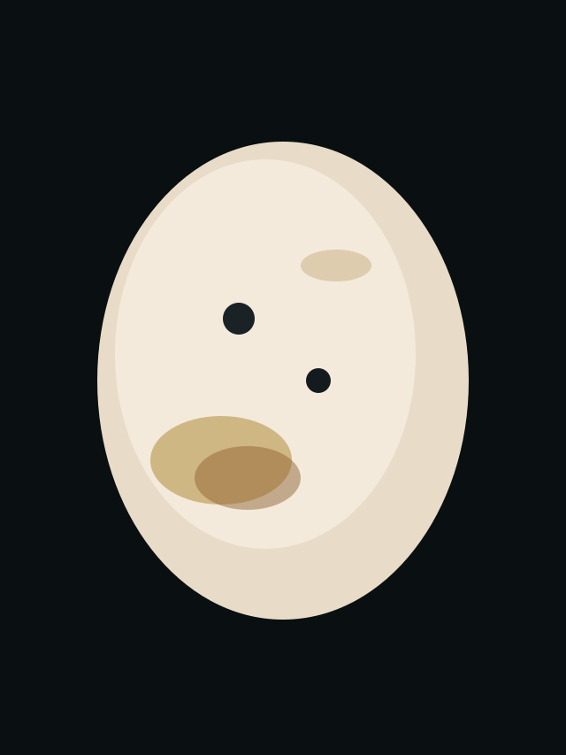
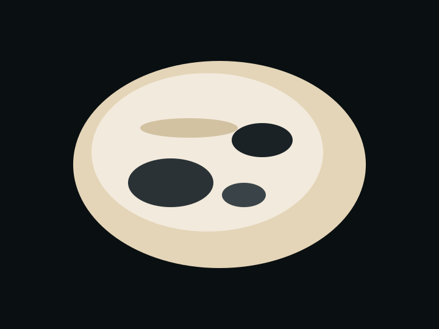

Path · Jewelry transformation
From rock to remarkable.
Show a raw stone, share what is known about it, and reveal its potential as a crafted piece. Origin stays visible.

Hook
Would you keep this rock or turn it into jewelry?
Earn attention with a real choice. The stone is already here. The decision is the viewer’s.
Discovery
The stone as it was found.
Similkameen River margin near Oliver. Self-collected by hand. Field ID logged. Mineral name held until tests are complete. No claim beyond what the card supports.

Reveal
Hands second. The wrap.
Recycled copper or recycled 925 sterling wire, depending on the piece. Formed at the studio bench. A piece is not called entirely field-recovered unless that metal batch was kept separate.
Question
What detail do you notice first on the finished piece?
Invite a real response. Comments, saves, and questions become the signal for what to make or show next.
Next step
Link a relevant item.
Handmade jewelry and custom orders live on the Shop.